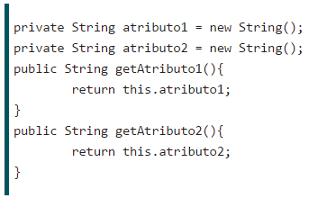
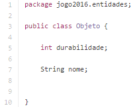
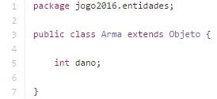
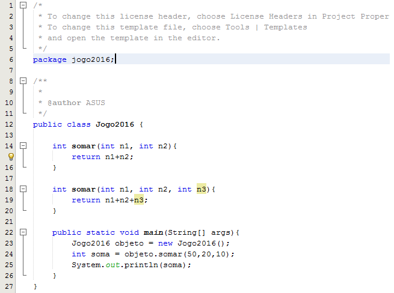
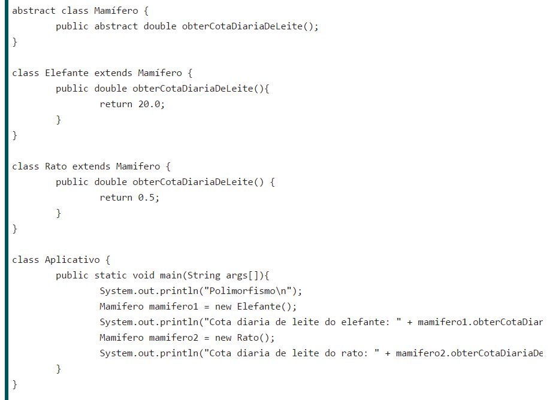

<!doctype html>  

<!-- Clique na imagem para ativar o JS -->

<html lang="pt-br">  

<head>  
<meta charset="utf-8">  
<meta name="viewport" content="width=device-width, initial-scale=1.0">  
<title>Projeto - Rhudyson</title>  
<link href="css/bootstrap.min.css" rel="stylesheet">  
<link href="css/bootstrap.css" rel="stylesheet">  
<link href="css/bootstrap-responsive.css" rel="stylesheet">  
<link href="css/bootstrap-responsive.min.css" rel="stylesheet">  
<script src="http://code.jquery.com/jquery-latest.js"></script>  
<script src="js/bootstrap.min.js"></script>  
<script>
	$(document).ready(function(){
		$(".logo").click(function(){
		alert("Porco Aranha");
			$("#oculta").slideToggle();
			
		});
	});
</script>
</head>  
<body>
<footer style="background-color:lightblue">      
<div class="navbar navbar-static-top navbar-inverse">  
<div class="navbar-inner">
<div class="container">     
<!-- isto cria um botão com 3 linhas que indica que o menu está aí  -->   
<a class="btn btn-navbar" data-toggle="collapse" data-target=".nav-collapse">   
<span class="icon-bar"></span>   
<span class="icon-bar"></span>  
<span class="icon-bar"></span> </a>   
<font size="7"><footer style="text-align: center" <text><b>Projeto - Porco Aranha(Spider Pig)</b></text></font>
<br>
</br>
</footer>
<center></center>  
<!-- A lista de links no cabeçalho usando a classe nav-collapse para esconder os links quando a largura do navegador ficar muito pequena. -->  
<div class="nav-collapse" id="oculta">  
<ul class="nav">  
<font size="5"><footer style="text-align: center" <text><b>Encapsulamento</b></text></font>
<br>
</br>
</footer>
<font size="3"><footer style="text-align: center" <text>Encapsulamento vem de encapsular, que em programação orientada a objetos significa juntar o programa em partes, 
        o mais isoladas possível. 
        A ideia é tornar o software mais flexível, fácil de modificar e de criar novas implementações</text></font>   
<br>
</br>
<center></center>
</footer>
<br>
</br>
<font size="5"><footer style="text-align: center" <text><b>Herança</b></text></font>
<br>
</br>
<font size="3"><footer style="text-align: center" <text>Herança é um princípio de orientação a objetos, que permite que classes compartilhem atributos e métodos, através de "heranças".
        Ela é usada na intenção de reaproveitar código ou comportamento generalizado ou especializar operações ou atributos.
        O conceito de herança de várias classes é conhecido como herança múltipla. Pode-se observar as classes 'aluno' e 'professor', onde ambas possuem atributos como nome, endereço e telefone.</text></font>
<br>
</br>
<center></center>
<center></center>        
<br> 
</br>
<font size="5"><footer style="text-align: center" <text><b>Sobrecarga</b></text></font>
<br>
</br>
<font size="3"><footer style="text-align: center" <text>Sobrecarga de método permite a existência de vários métodos de mesmo nome, porém com assinaturas levemente diferentes ou seja variando no número , tipo de argumentos , no valor de retorno e até variáveis diferentes.
        Ficará a cargo do compilador escolher de acordo com as listas de argumentos os procedimentos ou métodos a serem executados.</text></font>
<br>
</br>
<center></center>
<br>
</br>    
<font size="5"><footer style="text-align: center" <text><b>Polimorfismo</b></text></font>
<br>
</br>
<font size="3"><footer style="text-align: center" <text>Na programação orientada a objetos, o polimorfismo permite que referências de tipos de classes mais abstratas representem o comportamento das classes concretas que referenciam. Assim, é possível tratar vários tipos de maneira homogênea (através da interface do tipo mais abstrato). O termo polimorfismo é originário do grego e significa "muitas formas" (poli = muitas, morphos = formas).
O polimorfismo é caracterizado quando duas ou mais classes distintas tem métodos de mesmo nome, de forma que uma função possa utilizar um objeto de qualquer uma das classes polimórficas, sem necessidade de tratar de forma diferenciada conforme a classe do objeto. Uma das formas de implementar o polimorfismo é através de uma classe abstrata, cujos métodos são declarados mas não são definidos, e através de classes que herdam os métodos desta classe abstrata.</text></font>
<br>
</br>
<center></center>
<br>
</br>
<font size="5"><footer style="text-align: center" <text><b>Informações do Criador</b></text></font>
<font size="3"><footer style="text-align: center" <text>Nome:Rhudyson Leonardo Buranelo Gonçalves</text></font>
<font size="3"><footer style="text-align: center" <text>Curso: Ciência da Computação 2ºAno</text></font>
<font size="3"><footer style="text-align: center" <text>Email: rhudyson_lbg@hotmail.com</text></font>
<font size="3"><footer style="text-align: center" <text>Data de Nascimento: 05/11/1994</text></font>
<font size="3"><footer style="text-align: center" <text>Celular:(43)8800-5433</text></font>
<br>
</br>
<center></center>  
<font size="3"><footer style="text-align: center" <text><b>The End!</b></text></font>

<br>
</br>
                
</footer>
</ul>  
</div>  
</div>  
</div>
</footer>
<!-- Inserimos o rodapé -->  
<footer style="background-color:blue" id="footer">  
<p><b>Autor: Rhudyson Leonardo Buranelo Gonçalves</b></p>  
</footer>    
</body>  
</html>  